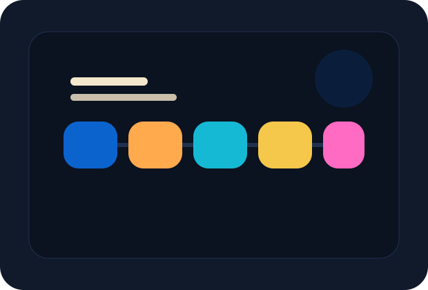

Cómo trabajamos
Entender rápido, decidir mejor y avanzar con pasos concretos.
Nos gusta bajar cada proyecto a una lógica simple. Primero entendemos el negocio. Después definimos qué conviene hacer y en qué orden.

Método
Procesos, tecnología y negocio se miran juntos.
Cuando esas tres partes no están alineadas, el proyecto pierde fuerza. Por eso trabajamos integrando comunicación, operación y herramientas desde el inicio.
01
Descubrimiento
Escuchamos, relevamos y detectamos qué está frenando hoy a tu empresa.
02
Análisis
Ordenamos prioridades y armamos una hoja de ruta clara para avanzar.
03
Implementación
Diseñamos, desarrollamos o ajustamos con foco en utilidad, velocidad y adopción.
04
Mejora continua
Medimos resultados, corregimos y seguimos optimizando lo que genera más impacto.
Filosofía
Menos complejidad innecesaria. Más foco en lo que mueve el negocio.